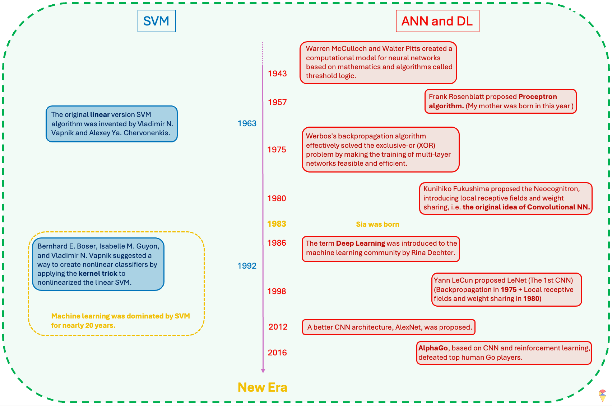
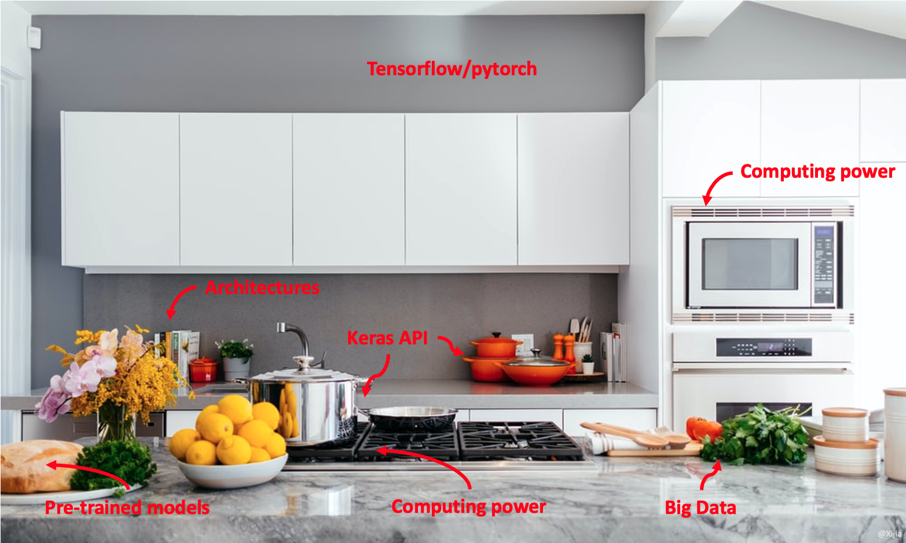
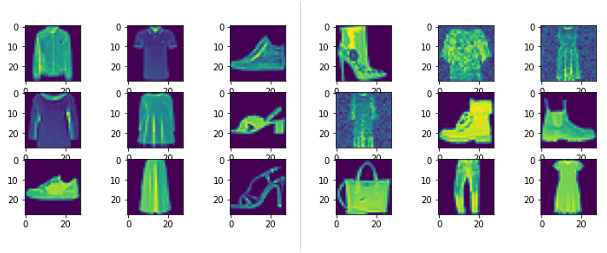

4. Deep Learning
I feel very lucky because we have witnessed a significant historical phase in humanity together. I remember in 2016, I was sitting on bus line 8 in Umeå, watching the live broadcast of the match between the Korean Go player Lee Sedol and AlphaGo on my phone. I was very conflicted at that time. First, I had always been proud of my ancestors for inventing Go (Weiqi), and I didn’t want the final intellectual barrier created by them to be easily overcome by computers. At the same time, I was very interested in the development of machine learning and was eager to see humanity make breakthroughs in the field of artificial intelligence. However, that spring, on the bus, I witnessed the singularity of human development. As a result, AlphaGo defeated Lee Sedol 4-1. Therefore, I am willing to regard the event of AlphaGo, based on deep learning, defeating top human Go players as a major milestone in the field of artificial intelligence.
Remark: It is worth mentioning that the Go player Lee Sedol, who was facing off against AlphaGo, was about to retire and was not considered the number one player in Go at that time. I guess, if the match had been played by the Chinese player Ke Jie, we would have to push this milestone further back. However, when Ke Jie competed a year later, AlphaGo had already evolved into the unbeatable AlphaGo Zero.
4.1 Retrospect
Although we have not yet introduced another famous machine learning model, the Support Vector Machine (SVM), we will use it as a reference to review the history of ANN and deep learning in the development of machine learning. Therefore, I will briefly introduce the characteristics of SVM here. SVM is a nonlinear machine learning model that belongs to the kernel methods family. It primarily uses the concept of feature mapping to nonlinearize a linear model. However, its approach to feature mapping is quite unique. Instead of manually selecting an appropriate feature mapping to get the augmented feature space, SVM employs a mathematical tool called the kernel function to control the final augmented feature space, allowing for a more flexible use of an unknown feature mapping through hyperparameters. (Note: Later, we will encounter the term “kernel” again in convolutional neural networks, but these are entirely different concepts.) Due to the use of kernel functions, along with convex optimization and the concept of reproducing kernel Hilbert space, SVM has gained a strong and solid theoretical foundation. Its flexibility and relatively low data requirements once made SVM the dominant model in the field of machine learning. Even today, you can still find many studies and explorations of deep learning through the perspective of kernel functions. I have a set of quite good notes for learning SVM and kernel methods. I will write them up and publish them on Yggdrasil later. If you’re interested, stay tuned! 😊

I have summarized the historical review of the field of machine learning in the image above. After reading it, you will realize that ANN is actually a very old concept and idea. The reason why machine learning was not as popular as it is today and was dominated by SVM for 20 years was mainly that the timing was not right—the two most critical factors had not yet matured.
So, what are those two key factors? The first key factor is data. There is an old Chinese saying, “A clever housewife cannot cook without rice.” Indeed, in the era before the internet and digital technology advanced, it was difficult to obtain high-quality data. The number of parameters in neural network models is often staggering, and insufficient data can directly lead to overfitting or even prevent the neural network model from being trained at all. Secondly, computational power is also crucial. Our small smartphones today are much more powerful than the computers of the past. The computational requirements for neural network models and their gradient information are enormous, so this critical factor is not hard to understand. However, the new era has arrived! We now have a much better kitchen now. It’s not just the “clever housewives” anymore—now, everyone can step into the kitchen and cook!

4.2 From Shallow to Deep
Before the success of deep learning, research in the field of machine learning on neural networks was primarily limited to shallow neural network models. These models typically had fewer layers, often just one hidden layer, and were more limited in their ability to capture complex patterns and representations in data. Deep learning specifically refers to machine learning models that utilize deep neural networks, which are neural networks with many layers. These models are capable of learning complex representations of data by processing it through multiple levels of abstraction, hence the term “deep.” So, when you refer to deep learning, it typically involves using deep neural network architectures for tasks such as image recognition, natural language processing, and speech recognition.
Shallow ANN:
Easier to train, more efficient:
Shallow ANN model typically consist of fewer layers and are simpler in structure, which makes them easier and faster to train. With fewer parameters to optimize, the training process is often more efficient and less computationally expensive compared to deeper models.Simpler decision structure:
The decision-making process in shallow ANNs is relatively straightforward. Since the networks have fewer layers, the information flow is less complex, which can sometimes lead to easier interpretability. However, this simplicity limits their ability to model more intricate patterns and relationships within data.Good enough theory:
Theoretical foundations for shallow ANNs are well established and understood. These models work well in many classical machine learning tasks where data is not overly complex. Shallow networks can perform well with simpler datasets, and the theory behind them has been solid for decades.
Deep ANN:
‘Arbitrarily’ powerful:
Deep ANNs are composed of many layers, each learning more complex patterns. This feature have the theoretical potential to model virtually any function and capture highly non-linear relationships in data.More ‘meaningful’ feature extraction:
As the End to End learning method, one of the major advantages of deep networks is their ability to learn hierarchical features in different levels automatically. This ability to perform automatic feature extraction is crucial in fields like computer vision, natural language processing, and speech recognition.More challenges:
Deep networks come with significant challenges. However, apart from lacking a solid theoretical foundation, researchers in the field of deep learning have essentially overcome various challenges. Next, let’s discuss the various solutions that deep learning has developed to face its challenges.
4.3 Challenges and Solutions
Challenge 1: High complexity model. Deep learning models based on deep neural network architectures have a considerable number of model parameters. This means we need to train models with high complexity. When the data volume is insufficient, overcoming the overfitting problem becomes our first challenge. People have approached this problem from both the model and data aspects.
First, in terms of the model, various regularization techniques have been introduced. For example, adding an L2 penalty to the neuron activation function, and introducing practical methods such as dropout learning and early stopping during model training. These methods are easy to understand. I suggest you read textbook sections 10.7.2 to 10.7.4 (pages 436-439).
Secondly, in situations where data is insufficient, many methods have also been proposed to overcome this challenge. For example, data augmentation is a very straightforward method.

In the previous section, we mentioned that the initial values of model parameters are crucial when training a model. A good set of initial values can help us find the optimal model parameters more quickly and avoid getting trapped in local optima. Therefore, based on this idea, concepts such as pre-training, fine-tuning, and transfer learning have also been proposed.
About Pre-training and Pre-trained Model: TBA
About Transfer Learning: TBA
Challenge 2: More tricky optimization problems. We have previously mentioned that the loss function of neural network models is highly unfriendly. It not only has many local minimum traps but also requires gradient information to be obtained layer by layer. Therefore, training neural network models is a tricky problem in most cases. However, we also have many new ideas and methods in this regard. One of the revolutionary changes is the introduction of the ReLU activation function.
Sigmoid function:
\[ \sigma(x) = \frac{1}{1 + e^{-x}} \]
ReLU function:
\[ \text{ReLU}(x) = max(0,x) \]
We know that activation functions play a crucial role in introducing non-linearity. However, traditional activation functions, such as the sigmoid function (also known as the logistic function), are quite complex, which increases the difficulty of computing gradient information and even causes significant issues in the backward propagation of gradients. The introduction of the ReLU function has greatly addressed this problem.
Another point worth mentioning is batch learning. We know that algorithms (such as gradient-based methods) guide us toward the optimal model parameters using gradient information. Just like in statistics, where all data is used to update maximum likelihood estimates, traditional methods involve using all the data to compute the gradient information. However, this approach not only increases the computational load significantly but also hinders the learning process. Therefore, it was proposed that data could be fed to the model in random batches. In this way, the algorithm makes targeted adjustments based on a subset of the data each time, which greatly enriches the gradient information we can obtain.
The analogy that requires some imagination
For Chinese students, since there’s no English-speaking environment, the main method of learning English is through memorizing word lists. We often find ourselves holding a vocabulary list all day long. For those of us who don’t particularly enjoy learning languages, like me, it’s hard to stick to this method. As a result, we often start memorizing from A and quickly give up. This makes us Chinese students have a special kind of feeling toward the word “abandon”. 😊 But if we shuffle the order and use the “batch” method to memorize (e.g. reading a book) rather than holding the entire book, it might lead to better results.
Epochs and batch_size
Later on, when you use Keras, you will frequently encounter these two parameters. “Epochs” are like the number of times you change shoes when you’re shopping, while “batch_size” is the amount of data you feed to the model in each epoch, just like how you might try on a certain number of shoes each time you change. How to choose the batch_size？ Well, people often choose powers of 2 as the batch size. he table below summarizes the key takeaways about choosing the batch size.
| Batch Size | Advantages | Disadvantages | Applicable Scenarios |
|---|---|---|---|
| Small Batch (16, 32, 64) | Stable training, reduces memory usage | Longer training time | Most tasks, default recommendation |
| Medium Batch (128, 256) | Balances speed and stability | May lead to local minima | When memory is sufficient |
| Large Batch (512+) | Faster training | Prone to local minima | When computational resources are abundant, very large datasets |
In addition to the Gradient Descent algorithm, we have many of its variant algorithms to choose from. In the next section, I will specifically discuss this point.
Challenge 3: Heavy computational works. Heavy computational tasks are something deep learning must face. Fortunately, we have more computing resources, so this is not a major issue. For example, we can use GPUs instead of CPUs for batch computations. I believe that, in the near future, we will have even more technologies to provide us with even greater computational power.
4.4 More options for shopping guides (Optimizers)
TBA